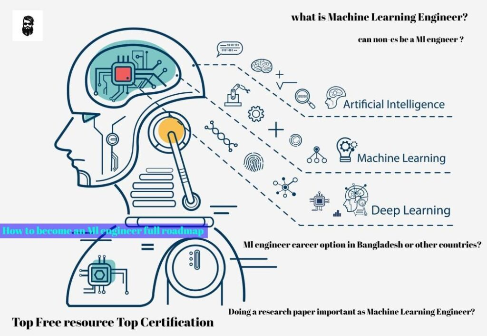

AI is not just creating “AI jobs.” It’s reshaping every sector. Over the next 7–9 years (2033–2035), demand will surge not only for technical AI builders, but for professionals who can apply, regulate, secure, and operationalize AI.
Families who understand this now can position students strategically by choosing the right degrees, certifications, and experiential pathways with strong ROI.
Below are the career categories we believe will see sustained, high-growth demand.
1. AI Engineering & Technical Development Roles

High-Demand Roles
- Machine Learning Engineer
- AI Software Engineer
- Data Scientist
- Robotics Engineer
- AI Infrastructure / Cloud Architect
- Natural Language Processing (NLP) Engineer
Why Demand Will Surge
AI systems must be built, trained, deployed, and maintained at scale across healthcare, finance, manufacturing, defense, education, and logistics.
Smart Education Pathways
- Computer Science (with AI/ML concentration)
- Data Science
- Electrical or Robotics Engineering
- Applied Mathematics
Important: Not all CS degrees are equal. Students need hands-on project portfolios, internships, and cloud certifications, not just theory.
2. AI + Healthcare Integration
Healthcare will be one of the largest AI adoption sectors.
Careers in Demand
- Clinical AI Specialist
- Healthcare Data Analyst
- Biomedical AI Engineer
- Health Informatics Director
- AI-Enhanced Diagnostics Specialist
Why This Matters
Aging populations + physician shortages + cost pressures = AI-assisted care expansion.
High-ROI Strategy
Students don’t always need medical school to benefit.
A health informatics or biomedical engineering path may offer six-figure upside without $300,000+ in medical debt.
This is what we mean by starting with the career outcome first.
3. AI Governance, Ethics & Policy
As AI expands, regulation will follow.
Growing Roles
- AI Policy Advisor
- AI Compliance Officer
- Algorithmic Bias Auditor
- Digital Privacy Attorney
- Tech Risk & Governance Consultant
Why This Is Exploding
Governments and corporations will need professionals who understand:
- Data privacy
- Bias mitigation
- Regulatory compliance
- Corporate liability
This is where law + technology intersects. Students interested in law may consider tech policy or privacy law specialization, which could offer stronger positioning than traditional legal tracks.
4. AI-Skilled Trades & Technical Operators
Here’s what most families miss:
AI will dramatically increase demand for advanced technical operators.
Careers
- Robotics Maintenance Technician
- Automation Systems Specialist
- Smart Manufacturing Technician
- Drone Operations Manager
- Mechatronics Technician
Why This Is a Hidden Opportunity
These roles often:
- Require 2–4-year technical degrees
- Pay $75K–$120K+
- Involve lower debt loads
- Have high job security
For many students, this pathway delivers exceptional ROI compared to traditional 4-year + graduate routes.
5. AI-Enabled Business Strategy Roles
Every company will need leaders who understand how to deploy AI strategically.
Roles
- AI Product Manager
- AI Implementation Consultant
- Business Intelligence Director
- Digital Transformation Strategist
- AI-Driven Marketing Analyst
These roles blend:
- Business acumen
- Data literacy
- Communication skills
- Strategic thinking
Students don’t need a PhD in AI to thrive here. A business degree + analytics concentration + internships may be the smarter play.
6. Cybersecurity & AI Security
AI increases cyber risk exponentially.
High-Growth Roles
- AI Security Engineer
- Cyber Threat Analyst
- Ethical Hacker
- AI Systems Risk Auditor
This field offers:
- Strong six-figure upside
- High demand
- Often requires certifications more than graduate degrees
Another example where ROI must be engineered intentionally.
What This Means for Families
The AI economy will reward:
- Technical depth
- Applied skill
- Cross-disciplinary fluency
- Real-world experience
It will punish:
- Generic degrees
- Unfocused graduate programs
- High debt without earnings clarity
The next 7–9 years will not just create “more tech jobs.” They will create career bifurcation, with strong outcomes for aligned students, difficult outcomes for misaligned ones.
The Strategic Question Families Must Ask
Instead of:
“What should my child major in?”
Ask:
“What AI-influenced industry problem will they be positioned to solve?”
Then determine:
- Does this career require a graduate degree?
- What is the projected income range?
- What is the total education cost?
- What is the break-even timeline?
- Are there lower-debt alternative pathways?
This is the work we do at Pathfinders.
We start with the career destination then reverse-engineer the education and funding plan around it to:
- Maximize lifetime earnings
- Minimize unnecessary debt
- Increase adaptability in fast-moving industries like AI
Because in the AI decade ahead, smart won’t be enough.
Strategic will win.